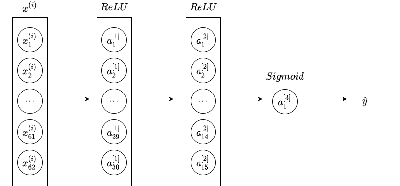

Introduce to Apollo(3.5) Prediction Module¶
The prediction module studies and predicts the behavior of all the obstacles detected by the perception module. Prediction receives data of obstacles along with basic perception information including positions, headings, velocities, accelerations and then generates predicted trajectories with probabilities for those obstacles.
Input¶
- Obstacles information from the perception module;
- Localization information from the localization module;
- Planning trajectory of ego vehicle of the previous computing cycle from the planning module.
Output¶
- Obstacles annotated with predicted trajectories and their priorities.
Obstacle priority is now calculated as individual scenarios are prioritized differently. The priorities include:
- ignore;
- caution;
- normal(default).
Functionalities¶
The prediction module comprises of 4 main functionalities:
- Container
- Scenario
- Evaluator
- Predictor
shown as below:
1 2 3 4 5 6 7 8 9 10 11 | |
Container¶
Container stores structured data from subscribed channels. Current supported inputs:
- perception obstacles
- ego vehicle localization
- ego vehicle planning trajectory
Architecture¶
The architecture of the container is as below. The class Container defines the interface of all containers and it can't be realized because it has a pure virtual function Insert. PoseContainer, ADCTrajectoryContainer and ObstacleContainer are derived from Container and realize the Insert function.
The ContainerManager class has many containers. It generates all three types of contianer and stores them in an unordered map to speed up the search process.
I just list some important methods of the class here, for more functions and their description, you can read the documents generated from doxygen.
Current container contains:
- PoseContainer
- ADCTrajectoryContainer
- ObstacleContainer
PoseContainer¶
PoseContainer receives localization message:
- position(3d);
- theta(orientation);
- velocity(3d);
and inserts ego vehicle as an obstacle into ObstacleContainer with id -1 and type VEHICLE.
TrajectoryContainer¶
TrajectoryContainer receives trajectory message from planning and sets the information of current lane:
- junction id;
- the distance to junction;
- lane sequence;
- overlaps of the lane.
ObstacleContainer¶
ObstacleContainer structures and stores all obstacles from perception, it has a LRU(Latest Recently Used)Cache class to manage the latest recently used 10 items. The value of LRUCache is the obstacle and the key is the id of the obstacle. The functionality of ObstacleContainer depends on the class ObstacleCluster, because method SortObstacle is used.
ObstacleCluster¶
ObstacleCluster contains not only Obstcles in an unordered map to speedup set and get but also the relationship between Obstacles and LaneGraphs from HdMap like Overlaps and Stopsigns.
Obstacle¶
Obstacle class is a basic unit to store Obstacles generated by perception module. It stores the information of an obstacle in a data structure Feature which is defined in google's data interchange format protobuf.
In addtion to the information about the obstacle, Obstacle uses
- a
KalmanFilterto track the trajectory of pedestrian; - a
KalmanFilterto track the trajectory of other obstacles(vehicle, bicycle, etc.) - a
DigitalFilterto filter the heading of bicycles and pedestrians.
Obstacle contains many methods about obstacle's property:
IsStill: return true if the obstacle is still.¶
There are two checks to determine whether an obstacle is still or not:
- distance check.
- speed check.
Firstly, we can calculate the average distance deviation of an obstacle's history position:
In the above equations,
- \(x_{avg}\) is the average distance deviation of \(x\);
- \(y_{avg}\) is the average distance deviation of \(y\);
- \(n\) is the history size of an obstacle, in the program is \(10\);
- \(x_{i}\) is the
ith \(x\) of the position in history; - \(y_{i}\) is the
ith \(y\) of the position in history; - \(x_{0}\) is the current \(x\) of the position of an obstacle;
- \(y_{0}\) is the current \(y\) of the position of an obstacle.
Then, the speed sensibility is defined as:
In the equation:
- \(K_{v}\) is the sensibility of speed;
- \(n\) is the history size of an obstacle;
- \(k_{std}\) is the position standard deviation of an obstacle, it's \(1.0\)(obstacle) or \(0.5\)(other) in program;
- \(d_{t}\) is the duration of the history.
Nextly, we calculate the distance:
In the equation:
- \(D\) is the distance of obstacle;
- \(D_{std}\) is the standard distance of obstacle.
Now we can determine the obstacle is:
- still, if \(v < v_{threshold}\)(\(v\) is current speed, \(v_{threshold}\) is the threshold of speed, it's \(0.8\)(obstacle) or \(0.5\)(other) in program);
- not still, if \(v > v_{threshold}\) and \(K_{v} < v_{threshold}\);
- not still, if \(v > v_{threshold}\) and \(K_{v} > v_{threshold}\) and \(D > 2.0 * D_{std}\);
- still, if \(v > v_{threshold}\) and \(K_{v} > v_{threshold}\) and \(D < 2.0 * D_{std}\);
Scenario¶
The Scenario sub-module analyzes scenarios that includes the ego vehicle.
Currently, two scenarios are defined:
- Cruise : this scenario includes lane keeping and following.
- Junction : this scenario involves junctions. Junctions can either have traffic lights and/or STOP signs.
The architecture of Scenario is as below:
ScenarioManager¶
The ScenarioManager class depends on FeatureExtractor to generate environment features and depends on ScenarioAnalyzer to analyze current scenario. If necessary, ScenarioManager will set obstacls' priorities as:
- IGNORE, if the obstacle is no need to be considered;
- NORMAL, if the obstacle should be considered.
The obstacle is set to NORMAL if the obstacle is:
in scan area, the scan arear is a rectanglar in front of ego vehicle with the length(\(80\) in program) and width(\(12\) in program), for example, the obstacle with id of 5 is in scan area but 6 not;on lane, for example, the obstacle with id of 3 is on lane but 2 not;near junction, means that the distance between obstacle and junction is less than threshold(it's \(1\) in program), see obstacle 4 and 5;near lane, this rule is not for the obstacle with the type ofVEHICLE, if the distance is less than threshold(\(3\) in program), obstacle 2 and 3 is near lane.
Otherwise the priority of the obstacle is IGNORE.
FeatureExtractor¶
FeatureExtractor sets
- Ego lane feature, including ego lane
idand distancesof lane; - Left and right lane feature, including lane
idand distancesof lane; - Junction feature, including junction
id, we only consider the junction that has signals or stop signs.
ScenarioAnalyzer¶
ScenarioAnalyzer determines which scene ego vehicle is in:
- Junction, if the distance between ego vehicle and junction is less than threshold(\(10\) in program);
- Cruise, otherwise.
ScenarioAnalyzer works depends on ScenarioFeatures. Once which scenario is determined, it will generate corresponding scenario features.
ScenarioFeatures¶
CruiseScenariosFeatures and CruiseScenariosFeatures are derived from the base class ScenarioFeatures.
Evaluator¶
The Evaluator predicts path and speed separately for any given obstacle. An evaluator evaluates a path by outputting a probability for it (lanesequence) using the given model stored in prediction/data/.
Now in prediction, the Evaluator for Cyclist are:
CyclistKeepLaneEvaluator;
and the Evaluator for Vehicle are:
CostEvaluator: probability is calculated by a set of cost functions;MLPEvaluator: probability is calculated using an MLP model;RNNEvaluator: probability is calculated using an RNN model;CruiseMLPEvaluator: probability is calculated using a mix of MLP and CNN-1d models for the cruise scenario;JunctionMLPEvaluator: probability is calculated using an MLP model for junction scenario.
The architecture of Evaluator is as below:
EvaluatorManager¶
The EvaluatorManager creates and stores all types of evaluators, so it has many Evaluator pointers. The Evaluator class is a base class that defines a pure virtual function Evaluate. EvaluatorManager calls Evaluator's subclass's function Evaluate to calculate probability for a lanesequence. If the obstacle type is:
VEHICLEand it'sON_LANE, theEvaluatorwill beCruiseMLPEvaluator;IN_JUNCTION, theEvaluatorwill beJunctionMLPEvaluator;
BICYCLEand it'sON_LANE, theEvaluatorwill beCyclistKeepLaneEvaluator;
UNKNOWNand it'sON_LANE, theEvaluatorwill beMLPEvaluator;
otherwise, the Evaluator would not work.
CyclistKeepLaneEvaluator¶
The CyclistKeepLaneEvaluator is simple and has only two probability values:
- 1.0, if current lane id is equal to the lane id in lane sequence;
- 0.0, if current lane id is not equal to the lane id in lane sequence.
The lanes sequence is a list of lane id that covers the length:
In equation,
- \(D_{lane}\) is the distance the lane sequance covers;
- \(v_{0}\) is current speed the obstacle has;
- \(t_{max}\) is the predicted trajectory duration, it's 8.0 in program;
- \(a_{max}\) is the maximum linear acceleration of vehicle, it's 4.0 in program;
MLPEvaluator¶
This Evaluator uses a MLP(Multilayer Perceptron):

The model has \(62\) inputs, \(22\) of which are obstacle features:
- \(\theta_{filter}\), the average of the latest 5 heading values in an obstacle's history;
- \(\theta_{mean}\), the average of all the heading values in an obstacle's history;
- \(\theta_{filter} - \theta_{mean}\);
- \(\theta_{diff} = \theta_{curr} - \theta_{prev}\), where \(\theta_{curr}\) is the average of the latest \(0 \to 4\) heading values in an obstacle's history, \(\theta_{prev}\) is the average of the latest \(5 \to 9\) heading values;
- \(\theta_{diff}'\), $\theta_{diff}' = \frac{\theta_{diff}}{\Delta_t} $;
- \(l_{filter}\), the average of the latest 5 lateral distance values in an obstacle's history;
- \(l_{mean}\), the average of all the lateral distance values in an obstacle's history;
- \(l_{filter} - l_{mean}\);
- \(l_{diff} = l_{curr} - l_{prev}\), where \(l_{curr}\) is the average of the latest \(0 \to 4\) lateral distance values in an obstacle's history, \(l_{prev}\) is the average of the latest \(5 \to 9\) lateral distance values;
- \(v\), the velocity of the obstacle;
- \(a\), the acceleration of the obstacle;
- \(D_{lb}\), the distance from obstacle to left lane boundary;
- \(D_{lb}' = \frac{D_{first} - D_{last}}{dt}\), where \(D_{first}\) is the first \(D_{lb}\) of the history, \(D_{last}\) is the last \(D_{lb}\) of the history, \(dt\) is the duration of the history;
- \(D_{lb diff}' = D_{lb curr} - D_{lb prev}\), where \(D_{lb curr}\) is the average of the latest \(0 \to 4\) \(D_{lb}\) values in an obstacle's history, \(D_{lb prev}\) is the average of the latest \(5 \to 9\) \(D_{lb}\) values;
- \(D_{rb}\), the distance from obstacle to right lane boundary;
- \(D_{rb}' = \frac{D_{first} - D_{last}}{dt}\), where \(D_{first}\) is the first \(D_{rb}\) of the history, \(D_{last}\) is the last \(D_{rb}\) of the history, \(dt\) is the duration of the history;
- \(D_{rb diff}' = D_{rb curr} - D_{rb prev}\), where \(D_{rb curr}\) is the average of the latest \(0 \to 4\) \(D_{rb}\) values in an obstacle's history, \(D_{rb prev}\) is the average of the latest \(5 \to 9\) \(D_{rb}\) values;
is_curr_lane_no_turn, this value is \(1\) if current lane isNoTurn, or it's \(0\);is_curr_lane_left_turn, this value is \(1\) if current lane isLeftTurn, or it's \(0\);is_curr_lane_right_turn, this value is \(1\) if current lane isRightTurn, or it's \(0\);is_curr_lane_uturn, this value is \(1\) if current lane isUTurn, or it's \(0\).
And the other 40 features are lane features, we choose 10 points from the reference line, each of them has 4 features:
- \(\psi_{diff}\): the heading deviation between obstacle and reference line;
- \(l_{point}\): the lateral distance of the lane point;
- \(\psi_{point}\): the heading of the lane point;
- \(\psi_{dev}\): the heading divation between obstacle and the point closet to the obstacle.
The output \(\widehat{y}\) is the probability that an obstacle stays on a lane.
CruiseMLPEvaluator¶
The model has \(23 + 5 * 9 + 8 + 20 * 4 = 146\) inputs, \(23\) of which are obstacle features:
- \(\theta_{filter}\), the average of the latest 5 heading values in an obstacle's history;
- \(\theta_{mean}\), the average of all the heading values in an obstacle's history;
- \(\theta_{filter} - \theta_{mean}\);
- \(\theta_{diff} = \theta_{curr} - \theta_{prev}\), where \(\theta_{curr}\) is the average of the latest \(0 \to 4\) heading values in an obstacle's history, \(\theta_{prev}\) is the average of the latest \(5 \to 9\) heading values;
- \(\theta_{diff}'\), \(\theta'_{diff} = \frac{\theta_{diff}}{\Delta_t}\);
- \(l_{filter}\), the average of the latest 5 lateral distance values in an obstacle's history;
- \(l_{mean}\), the average of all the lateral distance values in an obstacle's history;
- \(l_{filter} - l_{mean}\);
- \(l_{diff} = l_{curr} - l_{prev}\), where \(l_{curr}\) is the average of the latest \(0 \to 4\) lateral distance values in an obstacle's history, \(l_{prev}\) is the average of the latest \(5 \to 9\) lateral distance values;
- \(v\), the velocity of the obstacle;
- \(a\), the acceleration of the obstacle;
- \(j\), the jerk of the obstacle;
- \(D_{lb}\), the distance from obstacle to left lane boundary;
- \(D_{lb}' = \frac{D_{first} - D_{last}}{dt}\), where \(D_{first}\) is the first \(D_{lb}\) of the history, \(D_{last}\) is the last \(D_{lb}\) of the history, \(dt\) is the duration of the history;
- \(D_{lb diff}' = D_{lb curr} - D_{lb prev}\), where \(D_{lb curr}\) is the average of the latest \(0 \to 4\) \(D_{lb}\) values in an obstacle's history, \(D_{lb prev}\) is the average of the latest \(5 \to 9\) \(D_{lb}\) values;
- \(D_{rb}\), the distance from obstacle to right lane boundary;
- \(D_{rb}' = \frac{D_{first} - D_{last}}{dt}\), where \(D_{first}\) is the first \(D_{rb}\) of the history, \(D_{last}\) is the last \(D_{rb}\) of the history, \(dt\) is the duration of the history;
- \(D_{rb diff}' = D_{rb curr} - D_{rb prev}\), where \(D_{rb curr}\) is the average of the latest \(0 \to 4\) \(D_{rb}\) values in an obstacle's history, \(D_{rb prev}\) is the average of the latest \(5 \to 9\) \(D_{rb}\) values;
is_curr_lane_no_turn, this value is \(1\) if current lane isNoTurn, or it's \(0\);is_curr_lane_left_turn, this value is \(1\) if current lane isLeftTurn, or it's \(0\);is_curr_lane_right_turn, this value is \(1\) if current lane isRightTurn, or it's \(0\);is_curr_lane_uturn, this value is \(1\) if current lane isUTurn, or it's \(0\).
And \(5 * 9\) features are obstacle history features, we search \(5\) frames of history, each frame has \(9\) fearures:
is_curr_frame_has_hisotry, the value is \(1\) if current frame and previous frame all have position/velocity/acceleration/velocity_heading information, otherwise it's \(0\);- \(x\), in local coordinate system;
- \(y\), in local coordiante system;
- \(x^{\prime}\);
- \(y^{\prime}\);
- \(x^{\prime\prime}\);
- \(y^{\prime\prime}\);
- \(\theta_{v}\), the heading of velocity;
- \(\theta_{v}^{\prime}\).
\(8\) features are for forward and backward obstacles:
- \(s_{forward}\), the forward obstacle's distance;
- \(l_{forward}\), the forward obstacle's lateral distance;
- \(L_{forward}\), the forward obstacle's length;
- \(v_{forward}\), the forward obstacle's velocity;
- \(s_{backward}\), the backward obstacle's distance;
- \(l_{backward}\), the backward obstacle's lateral distance;
- \(L_{backward}\), the backward obstacle's length;
- \(v_{backward}\), the backward obstacle's velocity;
And the other \(20 * 4\) features are lane features, we choose \(20\) points from the reference line, each of them has 4 features:
- \(s_{point}\), the lane point's distance;
- \(l_{point}\), the lane point's lateral distance;
- \(\psi_{point}\): the heading of the lane point;
- \(\kappa_{point}\): the curvature of the lane point.
The result of CruiseMLPEvaluator is:
- the probability of an obstacle on a lane;
- the time of an obstacle to travel to reference line.
JunctionMLPEvaluator¶

This model has 3 obstacle features:
- \(v\), the velocity of an obstacle;
- \(a\), the acceleration of an obstacle;
- \(S_{junction}\), the area of the junction.
The other \(12 * 5\) features are junction features. We divide area aroud the vehicle to 12 regions and calculate the probability of each exit. Each exit has 5 features:
is_exit_exist, it's 1 if the exit of junction exists;- \(x_{diff} / S_{junction}\), \(x_{diff}\) is the deviation between obstacle and exit in x direction;
- \(y_{diff} / S_{junction}\), \(y_{diff}\) is the deviation between obstacle and exit in y direction;
- \(L_{diff} / S_{junction}\), \(L_{diff}\) is the distance between obstacle and exit;
- \(\theta_{diff}\), the heading difference between obstacle and exit.
And the output of the model is the probability of an obstacle to exit in 12 directions.
CostEvaluator¶
CostEvaluator calculates the probability based on the distance between obstacle and lane boundary.
In the equation:
- \(E_{l}\) is the distance from lane boundary to obstacle's location;
- \(W_{lane}\) is the width of lane;
- \(W_{l}\) is the lateral distance from lane reference line to obstacle's location;
- \(P_{cost}\) is the probability, calculated by a Sigmoid function.
RNNEvaluator¶
Not used in program.
Predictor¶
Predictor generates predicted trajectories for obstacles. Currently, the supported predictors include:
- Empty: obstacles have no predicted trajectories;
- Single lane: Obstacles move along a single lane in highway navigation mode. Obstacles not on lane will be ignored;
- Lane sequence: obstacle moves along the lanes;
- Move sequence: obstacle moves along the lanes by following its kinetic pattern;
- Free movement: obstacle moves freely;
- Regional movement: obstacle moves in a possible region;
- Junction: Obstacles move toward junction exits with high probabilities.
The relationship between predictors is as below:
PredictorManager¶
PredictorManager creates and stores all kinds of predictors. It has pointers of base class Predictor to points to its subclasses, the specail predictors.
PredictorManager runs the special predictor's method Predict to generate trajectories according to obstacles's type. If the obstacle's type is:
Vehicle, and it'sInJunction, the predictor will beLaneSequencePredictor;OnLane, the predictor will beMoveSequencePredictor;OffLane, the predictor will beFreeMovePredictor;
Pedestrian, the predictor will beFreeMovePredictor;Bicycle, and it'sOnLane, the predictor will beMoveSequencePredictor;OffLane, the predictor will beFreeMovePredictor;
Unknown, and it'sOnLane, the predictor will beMoveSequencePredictor;OffLane, the predictor will beFreeMovePredictor;
- other case, the predictor will be
EmptyPredictor.
Predictor¶
Predictor is a base class with the pure virtual function Predict. It also realizes some methods about trajectories:
TrimTrajectory¶
If the obstacle is in junction, we don't trim obstacle's trajectory; otherwise, trim the trajectory to the front of junction.
SupposedToStop¶
Determine if an obstacle is supposed to stop within a distance.
EmptyPredictor¶
EmptyPredictor does nothing but clear the trajectory of obstacle.
FreeMovePredictor¶
FreeMovePredictor assumes that the obstacle always moves with initial velocity and acceleration, the state is:
and the transition matrix is:
JunctionPredictor¶
JunctionPredictor uses a cubic polynomial to fit start-point(obstacle's position) and end-point(junction exit position) within given time.
RegionalPredictor¶
Not used in program.
SequencePredictor¶
SequencePredictor defines some common methods relatived to sequence.
FilterLaneSequence¶
This method filters out those obstacles that are close to the ego vehicle so that we will ignore them and drive normally unless they really kick into our lane.
LaneSequencePredictor¶
LaneSequencePredictor is derived from SequencePredictor. After filtering lane sequence, it use the method from Predictor to check if an obstacle is to stop:
true, generate constant acceleration trajectory;false, generate lane sequence trajectory.
Constant acceleration trajectory¶
In this case, predictor refresh trajectory point with the equation:
In equation:
- \(s\) is the obstacle distance on the lane;
- \(v\) is current velocity;
- \(t\) is the duration;
- \(a\) is current acceleration;
- \(v_0\) is the velocity from last step;
- \(l\) is the lateral distance between obstacle and lane reference line;
- \(l_0\) is the lateral distance last step.
- \(K_{approach}\) is the coefficient that obstacle moves towards lane reference line;
Lane sequence trajectory¶
In this case, we assume that the obstacle moves with constant velocity:
MoveSequencePredictor¶
MoveSequencePredictor is derived from SequencePredictor. After filtering lane sequence, it use the method from Predictor to check if an obstacle is to stop:
true, generate constant acceleration trajectory;false, generate lane sequence trajectory using best trajectory selection.
Const acceleration trajectory¶
This trajectory is the same as LaneSequencePredictor
Lane sequence trajectory using best trajectory selection¶
This trajectory traverses all the time to reach the end point and selects the best trajectory that has the minimum cost.
Generate a list of time to reach the end.¶
In program, we use the method GenerateCandidateTimes with the time gap of \(0.5\) and end time \(8.0\) to generate a sample time list: {0, 0.5, 1, 1.5, ..., 7.5, 8.0}.
Calculate the 5th degree polynomial of lateral ditance with each end time.¶
Since we have known the start state:
and end state:
with the 5th degree polynomial equation:
we can get the coefficients \(a_0\) to \(a_5\).
Calculate the 4th degree polynomial of longitude distance with each end time.¶
Since we have known the start state:
and end state:
with the 4th degree polynomial equation:
we can get the coefficients \(a_0\) to \(a_4\).
Find the coefficients of lateral and longitude with the lowest cost.¶
The cost of each group of coefficients can be calculated with:
In equation,
- \(C\) is the cost;
- \(\alpha\) is ratio of time, it's \(0.25\) in program;
- \(t_{end}\) is the time to reach end point.
Generate each point of the trajectory with the lowest cost.¶
Now that we know the equation of longitude and lateral and the time to reach end point, we can generate each point of the trajectory with time gap(\(0.1\) in program)
SingleLanePredictor¶
This predictor uses the same method as LaneSequencePredictor lane sequence case.